คู่มือใช้งานเครื่องมือ · ระดับ Free
แปลงหน่วยเชื้อเพลิง
Fuel & Flue Gas Converter
FREE
สำหรับช่างเทคนิคที่เพิ่งเริ่มงาน — อ่านแล้วทำตามได้เอง
ใช้เวลาฝึกประมาณ 45 นาที
เคสตัวอย่าง: โรงงาน A ใช้กะลาปาล์ม ราคา 2,800 บาท/ตัน
อ.หนึ่ง กลับทวี / Aj. Nueng Klubtavee
tripleeenergytools.com
หน้าจอเครื่องมือ — เปิดได้จากเมนู Free ของเว็บไซต์
รุ่นเครื่องมือ: Free commit 8a6bc96 · จับภาพ 16 พ.ย. 2569 · คู่มือ Rev01
เครื่องมือนี้ตอบคำถามอะไร
คู่มือใช้งาน · แปลงหน่วยเชื้อเพลิงและไอเสีย (Fuel & Flue Gas Converter) · ระดับ Free
2 / 25
| คำถามหน้างาน | ใช้แท็บไหน | เคสโรงงาน A ได้ |
|---|---|---|
| เชื้อเพลิงที่ซื้อ คิดเป็นบาทต่อ GJ เท่าไร | 1 · ราคาเชื้อเพลิง | 165.88 บาท/GJ |
| เชื้อเพลิงตัวไหนถูกกว่าเมื่อคิดที่ความร้อนใช้งานจริง | 2 · เปรียบเทียบเชื้อเพลิง | แกลบ ถูกสุด · ไฟฟ้า แพงสุด |
| ค่าความร้อนที่ได้มาเป็น LHV หรือ HHV แปลงกลับไปมาอย่างไร | 3 · LHV ↔ HHV | HHV 18.266 · LHV 16.880 |
| เชื้อเพลิง 1,000 ตัน เป็นพลังงานกี่ GJ กี่ toe | 4 · ปริมาณ ↔ พลังงาน | 16,880 GJ · 403.1719 toe |
| ค่ามลพิษที่วัดได้ แก้ไปที่ O₂ อ้างอิงแล้วเป็นเท่าไร | 5 · ไอเสีย & O₂ Correction | 320 → 471.58 |
| ค่าความร้อนของเชื้อเพลิงชนิดนี้ควรเป็นเท่าไร | 6 · คลังเชื้อเพลิง GCV/NCV | 73 รายการ พร้อมที่มา |
💡 เคล็ดลับ
เครื่องมือนี้ไม่มีปุ่มคำนวณ — ผลเปลี่ยนทันทีที่พิมพ์ และแต่ละแท็บใช้แยกกันได้
แผนที่หน้าจอ
คู่มือใช้งาน · แปลงหน่วยเชื้อเพลิงและไอเสีย (Fuel & Flue Gas Converter) · ระดับ Free
3 / 25
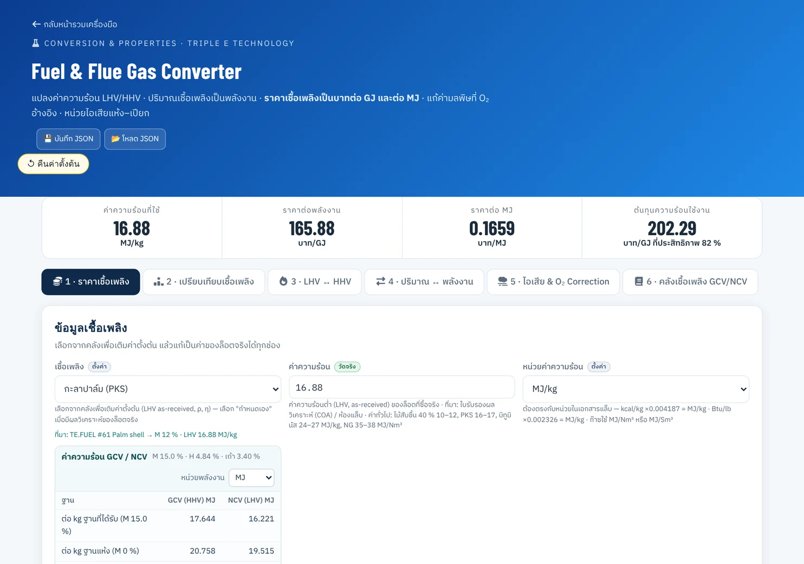
1
2
3
4
5
1
บันทึก JSON · โหลด JSON
2
คืนค่าตั้งต้น — ล้างทุกช่องกลับเป็นตัวอย่าง
3
แถบสรุป 4 ช่อง — เห็นตลอดทุกแท็บ
4
แท็บ 6 แท็บ
5
การ์ดของแท็บที่เลือก — ทุกช่องมีคำอธิบายสีเทาอยู่ใต้ช่อง
💡 เคล็ดลับ
เริ่มที่แท็บ 1 เสมอ — เชื้อเพลิงและราคาที่เลือกในแท็บ 1 ถูกส่งไปใช้ในแท็บ 3 และ 4
เปิดบนมือถือ สลับภาษา และป้ายสีข้างชื่อช่อง
คู่มือใช้งาน · แปลงหน่วยเชื้อเพลิงและไอเสีย (Fuel & Flue Gas Converter) · ระดับ Free
4 / 25
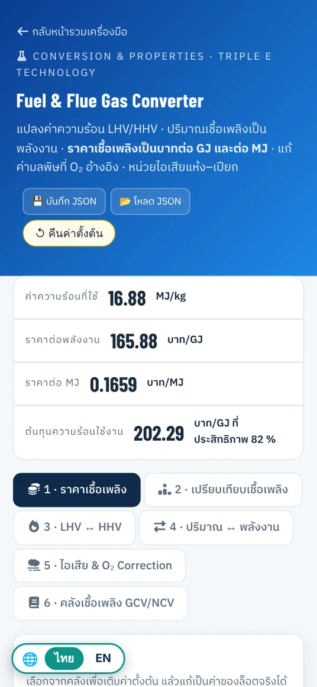
ใช้บนมือถือได้ — การ์ดเรียงเป็นคอลัมน์เดียว
ปุ่ม 🌐 ไทย | EN ลอยอยู่ด้านล่าง กดสลับภาษาได้ ค่าที่กรอกไว้ไม่หาย
ป้าย วัดจริง = มาจากผลแล็บหรือการวัด · ตั้งค่า = เลือกเอง · คำนวณ = เครื่องมือเติมให้
ป้าย ⚡ จาก แท็บ 1 = ช่องนั้นดึงค่าจากแท็บ 1 — พิมพ์ทับได้ถ้ามีผลแล็บของตัวเอง
💡 เคล็ดลับ
ใต้ทุกช่องมีคำอธิบายสีเทา บอกช่วงค่าปกติและที่มาของข้อมูล
คำศัพท์ 6 คำที่ต้องรู้ก่อนเริ่ม
คู่มือใช้งาน · แปลงหน่วยเชื้อเพลิงและไอเสีย (Fuel & Flue Gas Converter) · ระดับ Free
5 / 25
| คำ | ความหมายแบบสั้น | จำง่าย ๆ |
|---|---|---|
| HHV (GCV) | ค่าความร้อนสูง — นับความร้อนที่ได้คืนเมื่อไอน้ำในไอเสียกลั่นตัวด้วย | ตัวเลขสูงกว่าเสมอ |
| LHV (NCV) | ค่าความร้อนต่ำ — ไม่นับความร้อนแฝงของไอน้ำ | ใช้กับงานชีวมวลส่วนใหญ่ |
| as-received / dry | as-received = ตามที่รับจริง (รวมความชื้น) · dry = หักความชื้นออกแล้ว | ซื้อขายกันที่ as-received |
| GJ · MMBTU · toe | หน่วยพลังงาน: 1 GJ = 1,000 MJ · 1 MMBTU = 1,055 MJ · 1 toe = 41,868 MJ | รายงานพลังงานใช้ MJ และ toe |
| O₂ อ้างอิง | ค่า O₂ ที่กฎหมายกำหนดให้แก้ค่ามลพิษไปเทียบ | กันการเจือจางด้วยอากาศ |
| ppm · mg/Nm³ | ppm = ส่วนในล้านส่วนโดยปริมาตร · mg/Nm³ = มวลต่อปริมาตรที่ 0 °C | แปลงกันด้วยมวลโมเลกุล |
⚠️ ระวัง
ค่าความร้อนและประสิทธิภาพต้องอยู่บนฐานเดียวกัน (LHV กับ LHV หรือ HHV กับ HHV) — ผสมฐานแล้วผลผิดหลายเปอร์เซ็นต์
เตรียมข้อมูลก่อนเริ่ม
คู่มือใช้งาน · แปลงหน่วยเชื้อเพลิงและไอเสีย (Fuel & Flue Gas Converter) · ระดับ Free
6 / 25
| แท็บ | ข้อมูลที่ต้องมี | แหล่งข้อมูล | ค่าโรงงาน A |
|---|---|---|---|
| 1 | ชนิดเชื้อเพลิง · ค่าความร้อน (ถ้ามีผลแล็บ) · ราคาซื้อจริงรวมขนส่ง | ใบส่งของ · ผลแล็บ · คลังในเครื่องมือ | PKS · 16.88 MJ/kg · 2,800 บาท/ตัน |
| 1 | ประสิทธิภาพของอุปกรณ์ที่ใช้เชื้อเพลิงนั้น (%) | ผลตรวจวัดประสิทธิภาพหม้อไอน้ำ/เตา | 82 % |
| 2 | เชื้อเพลิงทางเลือก: ค่าความร้อน · ราคา · ประสิทธิภาพที่คาดไว้ | ใบเสนอราคา · ผลแล็บ | ตารางตัวอย่าง 7 แถว |
| 3 | ไฮโดรเจน · ความชื้น · เถ้า · ออกซิเจน + ไนโตรเจน ของเชื้อเพลิง | ผลแล็บ (ultimate / proximate analysis) | 5.7 · 12 · 4 · 39.76 % |
| 4 | ปริมาณเชื้อเพลิงที่ใช้ต่อปีหรือต่อเดือน | บันทึกการรับ-จ่ายเชื้อเพลิง | 1,000 ตัน |
| 5 | ค่ามลพิษที่วัดได้ · O₂ ที่วัดได้ · O₂ อ้างอิงตามประกาศ | รายงานตรวจวัดปล่อง · ประกาศที่ใช้บังคับ | 320 ppm · 11.5 % · 7 % |
💡 เคล็ดลับ
ราคาที่ใช้ต้องเป็นราคาถึงหน้าโรงงาน — ค่าขนส่งของชีวมวลบางครั้งสูงเท่าค่าตัวเชื้อเพลิง
ขั้นที่ 1
แท็บ 1: เลือกเชื้อเพลิงและค่าความร้อน
คู่มือใช้งาน · แปลงหน่วยเชื้อเพลิงและไอเสีย (Fuel & Flue Gas Converter) · ระดับ Free
7 / 25
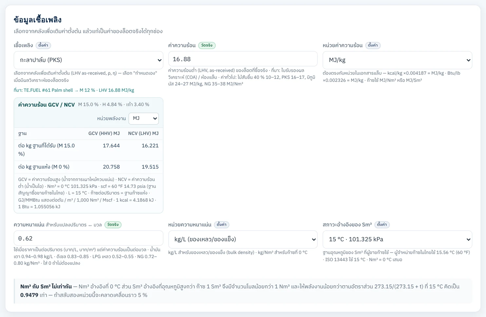
1
2
3
4
5
1
เลือกเชื้อเพลิงจากรายการ — เครื่องมือเติมค่าความร้อน ความหนาแน่น และประสิทธิภาพทั่วไปให้
2
ค่าความร้อน — มีผลแล็บของตัวเอง ให้พิมพ์ทับ
3
หน่วยของค่าความร้อน (ต่อ kg · ต่อลิตร · ต่อ Nm³)
4
ความหนาแน่น — ใช้แปลงระหว่างปริมาตรกับมวล
5
อุณหภูมิอ้างอิงของ Sm³ (ใช้กับก๊าซ)
บรรทัด "ที่มา" ใต้ช่องบอกว่าค่ามาจากรายการใดในคลัง — ที่มา: TE.FUEL #61 Palm shell → M 12 % · LHV 16.88 MJ/kg
ตาราง GCV / NCV ใต้ช่องแสดงค่าของรายการในคลังที่ความชื้นของคลัง (M 15 %) — ช่องค่าความร้อนใช้ความชื้น 12 % จึงเป็น 16.88 ดูป้ายความชื้นทุกครั้งก่อนหยิบตัวเลข
ขั้นที่ 2
กรอกราคาและประสิทธิภาพ
คู่มือใช้งาน · แปลงหน่วยเชื้อเพลิงและไอเสีย (Fuel & Flue Gas Converter) · ระดับ Free
8 / 25
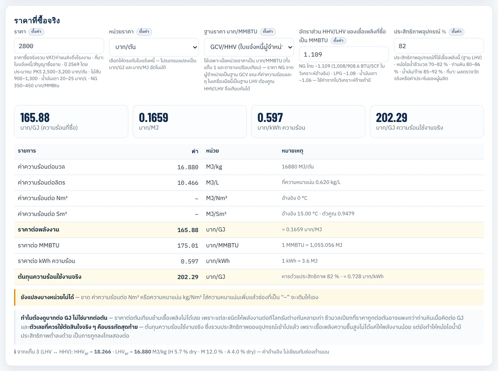
1
2
3
4
5
1
ราคาที่ซื้อจริง
2
หน่วยราคา — บาท/ตัน · บาท/kg · บาท/ลิตร · บาท/MMBTU ฯลฯ
3
ฐานของราคาบาท/MMBTU (ใช้กับก๊าซ: สัญญาซื้อขายมักเป็นฐาน HHV)
4
ประสิทธิภาพอุปกรณ์ (%) — ใช้คิดต้นทุนความร้อนใช้งานจริง
5
ผล: 165.88 บาท/GJ · 175.01 บาท/MMBTU · 0.597 บาท/kWh ความร้อน
ต้นทุนความร้อนใช้งานจริง = ราคาต่อ GJ ÷ ประสิทธิภาพ = 165.88 ÷ 0.82 = 202.29 บาท/GJ
ข้อความสีเหลืองบอกหน่วยที่ยังแปลงไม่ได้เพราะขาดข้อมูล (เช่น เชื้อเพลิงแข็งไม่มีค่าต่อ Nm³) — เป็นปกติ
อ่านแถบสรุป 4 ช่อง
คู่มือใช้งาน · แปลงหน่วยเชื้อเพลิงและไอเสีย (Fuel & Flue Gas Converter) · ระดับ Free
9 / 25
1
2
3
4
1
ค่าความร้อนที่ใช้คำนวณ
2
ราคาต่อพลังงาน 165.88 บาท/GJ — ตัวเลขหลักที่ใช้เทียบเชื้อเพลิง
3
ราคาต่อ MJ 0.1659 บาท
4
ต้นทุนความร้อนใช้งาน 202.29 บาท/GJ — หลังหักความสูญเสียของอุปกรณ์
แถบนี้อยู่บนสุดของทุกแท็บ — เปลี่ยนเชื้อเพลิงหรือราคาแล้วเห็นผลทันที
เทียบเชื้อเพลิงต่างชนิดต้องใช้ช่อง ④ เพราะอุปกรณ์แต่ละแบบประสิทธิภาพไม่เท่ากัน
ตารางราคาในทุกหน่วย
คู่มือใช้งาน · แปลงหน่วยเชื้อเพลิงและไอเสีย (Fuel & Flue Gas Converter) · ระดับ Free
10 / 25
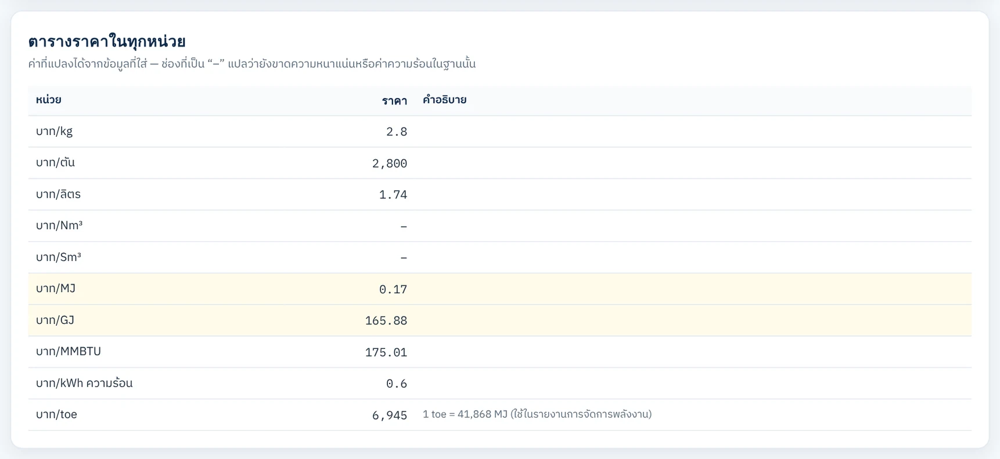
ราคาเดียวกันแปลงเป็นทุกหน่วย: 2.8 บาท/kg = 2,800 บาท/ตัน = 165.88 บาท/GJ = 6,945 บาท/toe
ใช้ตอบคำถามเมื่อผู้ขายเสนอราคาคนละหน่วย หรือเมื่อต้องกรอกรายงานที่ใช้หน่วย toe
ช่องที่เป็นขีด (–) คือหน่วยที่ไม่ใช้กับเชื้อเพลิงชนิดนั้น
💡 เคล็ดลับ
1 toe = 41,868 MJ — หน่วยที่ใช้ในรายงานการจัดการพลังงาน
ลองเปลี่ยนค่า (What-if): ราคาและประสิทธิภาพ
คู่มือใช้งาน · แปลงหน่วยเชื้อเพลิงและไอเสีย (Fuel & Flue Gas Converter) · ระดับ Free
11 / 25
| กรณี | บาท/GJ ที่ซื้อ | บาท/GJ ใช้งานจริง | บาท/kWh ความร้อนใช้งาน |
|---|---|---|---|
| โรงงาน A: PKS 2,800 บาท/ตัน · ประสิทธิภาพ 82 % | 165.88 | 202.29 | 0.728 |
| ราคาขึ้นเป็น 3,500 บาท/ตัน | 207.35 | 252.86 | 0.910 |
| ประสิทธิภาพตกเหลือ 70 % | 165.88 | 236.97 | 0.853 |
| เปลี่ยนเป็นไม้สับ ความชื้น 40 % ราคา 1,100 บาท/ตัน (ประสิทธิภาพ 80 %) | 118.92 | 148.65 | 0.535 |
ทำเอง: แก้ค่าในแท็บ 1 → ดูแถบสรุป → แก้กลับเป็นค่าเดิม
ประสิทธิภาพตก 12 จุด ต้นทุนความร้อนเพิ่มพอ ๆ กับราคาเชื้อเพลิงขึ้นหลายร้อยบาทต่อตัน — การดูแลประสิทธิภาพคือการคุมต้นทุนเชื้อเพลิง
ไม้สับราคาต่อตันถูกกว่ามาก แต่ค่าความร้อนต่ำเพราะความชื้นสูง — ต้องเทียบที่บาท/GJ เสมอ
ขั้นที่ 3
แท็บ 2: เปรียบเทียบเชื้อเพลิงหลายชนิด
คู่มือใช้งาน · แปลงหน่วยเชื้อเพลิงและไอเสีย (Fuel & Flue Gas Converter) · ระดับ Free
12 / 25
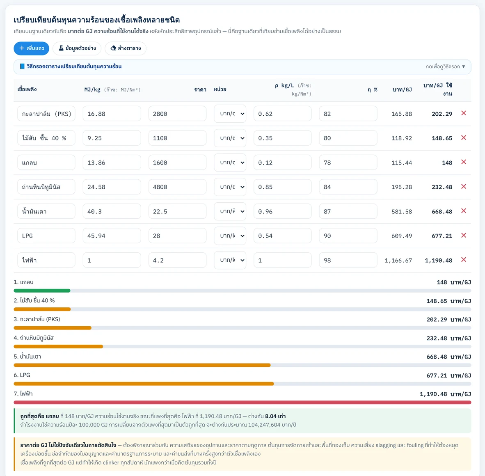
1
2
3
4
1
เพิ่มแถว — ใส่เชื้อเพลิงทางเลือกของโรงงาน
2
ข้อมูลตัวอย่าง — เติมตัวอย่าง 7 แถวกลับมา
3
ตาราง: ชื่อ · ค่าความร้อน · ราคา · หน่วยราคา · ความหนาแน่น · ประสิทธิภาพ
4
ผลจัดอันดับจากถูกไปแพง ที่ความร้อนใช้งานจริง
แถบ วิธีกรอกตาราง เหนือตาราง กดเปิดดูคำอธิบายแต่ละคอลัมน์ได้
ตัวอย่าง: ถูกสุด แกลบ 148 บาท/GJ · แพงสุด ไฟฟ้า 1,190.48 บาท/GJ — ต่างกัน 8.04 เท่า
ราคาในตัวอย่างเป็นค่าสมมติ — ต้องแก้เป็นราคาที่โรงงานซื้อได้จริงก่อนใช้ตัดสินใจ
⚠️ ระวัง
ราคาต่อ GJ ไม่ใช่ปัจจัยเดียว — เครื่องมือเตือนให้ดูความมั่นคงของอุปทาน การจัดการเถ้า และความเสี่ยงตะกรันประกอบด้วย
ขั้นที่ 4
แท็บ 3: แปลง LHV ↔ HHV
คู่มือใช้งาน · แปลงหน่วยเชื้อเพลิงและไอเสีย (Fuel & Flue Gas Converter) · ระดับ Free
13 / 25
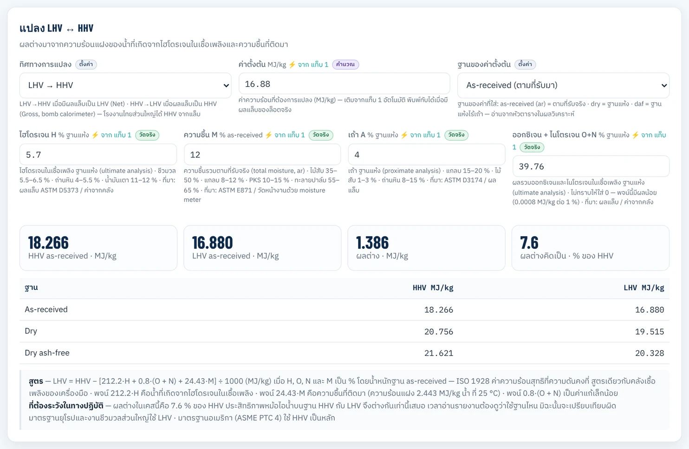
1
2
3
4
5
6
7
8
1
ทิศทาง: มี LHV จะหา HHV หรือกลับกัน
2
ค่าตั้งต้น (MJ/kg) — ดึงจากแท็บ 1
3
ฐานของค่าตั้งต้น: as-received · dry · dry ash-free
4
ไฮโดรเจน (% ฐานแห้ง) จากผลแล็บ
5
ความชื้น (% as-received)
6
เถ้า (% ฐานแห้ง)
7
ออกซิเจน + ไนโตรเจน (% ฐานแห้ง) — ไม่ทราบใส่ 0
8
ผล: HHV 18.266 · LHV 16.880 MJ/kg · ต่างกัน 1.386 (7.6 % ของ HHV)
ผลต่างมาจากน้ำ 2 ส่วน: น้ำที่เกิดจากไฮโดรเจนในเชื้อเพลิง และความชื้นที่ติดมา — เครื่องมือใช้สูตร ISO 1928 สูตรเดียวกับคลังเชื้อเพลิง
ตารางล่างให้ค่าทั้ง 3 ฐาน — ฐานแห้ง HHV 20.756 · LHV 19.515 MJ/kg ใช้เทียบกับผลแล็บ
ลองเปลี่ยนค่า (What-if): ความชื้นทำให้ LHV ห่างจาก HHV แค่ไหน
คู่มือใช้งาน · แปลงหน่วยเชื้อเพลิงและไอเสีย (Fuel & Flue Gas Converter) · ระดับ Free
14 / 25
| เชื้อเพลิง | ความชื้น (%) | HHV (MJ/kg) | LHV (MJ/kg) | ผลต่าง (% ของ HHV) |
|---|---|---|---|---|
| กะลาปาล์ม (PKS) | 12 | 18.266 | 16.880 | 7.6 |
| ไม้สับ | 40 | 10.986 | 9.250 | 15.8 |
ทำเอง: แท็บ 1 เลือกเชื้อเพลิง → แท็บ 3 อ่านผล
เชื้อเพลิงชื้นมาก ผลต่างยิ่งกว้าง — ประสิทธิภาพหม้อไอน้ำที่รายงานบนฐาน HHV กับ LHV จะต่างกันตามสัดส่วนนี้
อ่านรายงานหรือใบเสนอราคาทุกครั้งให้ดูว่าใช้ฐานไหน ก่อนเอาตัวเลขไปเทียบ
ขั้นที่ 5
แท็บ 4: ปริมาณเชื้อเพลิงเป็นพลังงาน
คู่มือใช้งาน · แปลงหน่วยเชื้อเพลิงและไอเสีย (Fuel & Flue Gas Converter) · ระดับ Free
15 / 25
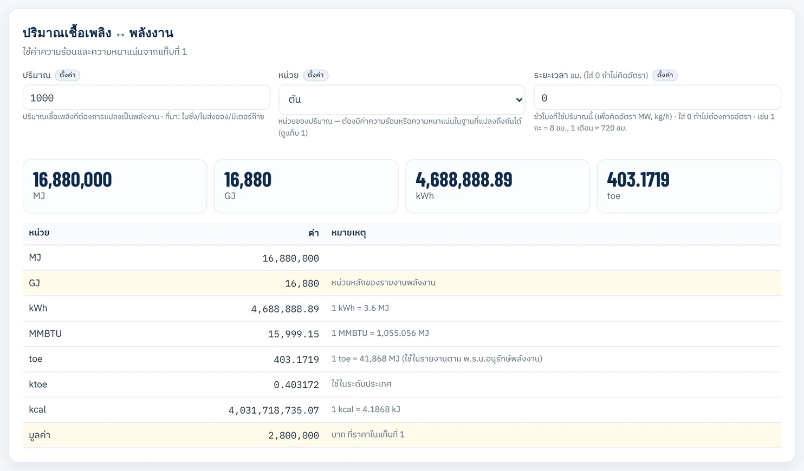
1
2
3
4
1
ปริมาณเชื้อเพลิง
2
หน่วย — ตัน · kg · ลิตร · Nm³ ฯลฯ
3
ระยะเวลา (ชั่วโมง) — ใส่ 0 ถ้าไม่ต้องการอัตราต่อชั่วโมง
4
ผล: 16,880 GJ = 4,688,888.89 kWh = 403.1719 toe · มูลค่า 2,800,000 บาท
ใช้ค่าความร้อนและราคาจากแท็บ 1 — ตรวจแท็บ 1 ให้ถูกก่อน
ใช้กรอกรายงานการจัดการพลังงานที่ต้องการหน่วย MJ และ toe
ขั้นที่ 6
แท็บ 5: แก้ค่ามลพิษไปที่ O₂ อ้างอิง
คู่มือใช้งาน · แปลงหน่วยเชื้อเพลิงและไอเสีย (Fuel & Flue Gas Converter) · ระดับ Free
16 / 25
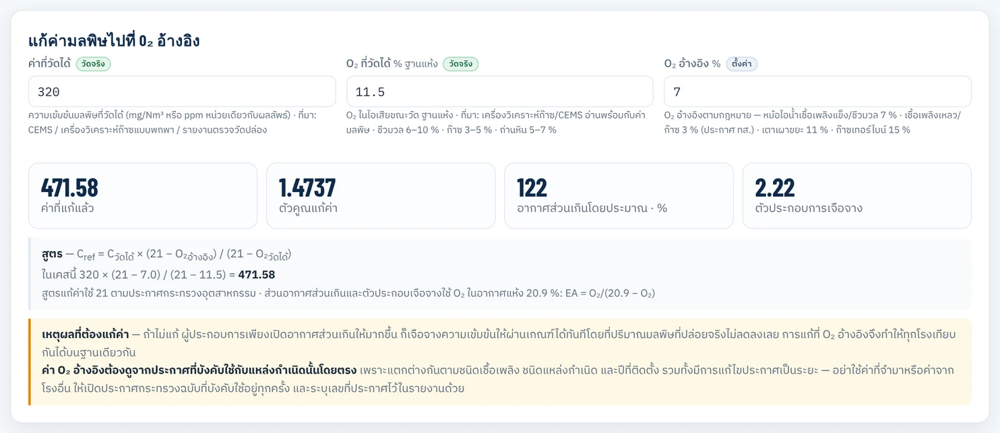
1
2
3
4
1
ค่าที่วัดได้ (ppm หรือ mg/Nm³)
2
O₂ ที่วัดได้ในไอเสีย (% ฐานแห้ง)
3
O₂ อ้างอิง ตามประกาศที่ใช้กับแหล่งกำเนิดนั้น
4
ผล: 320 × (21 − 7) ÷ (21 − 11.5) = 471.58 · ตัวคูณ 1.4737 · อากาศส่วนเกินราว 122 %
ค่าที่แก้แล้วสูงกว่าค่าที่วัด เมื่อ O₂ ที่วัดได้สูงกว่า O₂ อ้างอิง — แปลว่าไอเสียถูกอากาศเจือจางอยู่
ค่าที่นำไปเทียบมาตรฐานคือค่าที่แก้แล้วเท่านั้น
⚠️ ระวัง
O₂ อ้างอิงต่างกันตามชนิดแหล่งกำเนิดและเชื้อเพลิง — ต้องดูจากประกาศที่บังคับใช้กับโรงงานนั้นโดยตรง
ลองเปลี่ยนค่า (What-if): O₂ ที่วัดได้ และ O₂ อ้างอิง
คู่มือใช้งาน · แปลงหน่วยเชื้อเพลิงและไอเสีย (Fuel & Flue Gas Converter) · ระดับ Free
17 / 25
| กรณี | ตัวคูณ | ค่าที่แก้แล้ว | อากาศส่วนเกิน (%) |
|---|---|---|---|
| โรงงาน A: วัดได้ 320 ที่ O₂ 11.5 % · อ้างอิง 7 % | 1.4737 | 471.58 | 122 |
| เปิดอากาศมากขึ้น: O₂ ที่วัดได้ 13.0 % (ค่าที่วัดเท่าเดิม) | 1.7500 | 560 | 165 |
| ประกาศกำหนด O₂ อ้างอิง 6 % | 1.5789 | 505.26 | 122 |
ทำเอง: แก้ค่าในแท็บ 5 → อ่านผล → แก้กลับเป็นค่าเดิม
ยิ่ง O₂ ที่วัดได้สูง ตัวคูณยิ่งมาก — การเปิดอากาศเพิ่มไม่ช่วยให้ผ่านเกณฑ์ และยังทำให้ประสิทธิภาพหม้อไอน้ำตก
O₂ อ้างอิงต่างกัน 1 จุด ผลต่างกันหลายเปอร์เซ็นต์ — ใช้ค่าผิดประกาศ ผลเทียบมาตรฐานผิดทันที
แปลง ppm ↔ mg/Nm³
คู่มือใช้งาน · แปลงหน่วยเชื้อเพลิงและไอเสีย (Fuel & Flue Gas Converter) · ระดับ Free
18 / 25
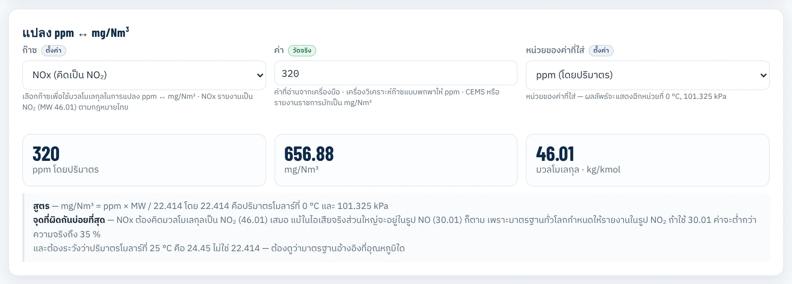
1
2
3
4
1
ชนิดก๊าซ — NOx ให้เลือก "คิดเป็น NO₂"
2
ค่าที่จะแปลง
3
หน่วยของค่าที่กรอก
4
ผล: 320 ppm = 656.88 mg/Nm³ (มวลโมเลกุล 46.01)
mg/Nm³ = ppm × มวลโมเลกุล ÷ 22.414 (ที่ 0 °C ความดันบรรยากาศ)
มาตรฐานบางฉบับอ้างอิงที่ 25 °C ซึ่งใช้ตัวหาร 24.45 — เครื่องมือเขียนเตือนไว้ ให้ดูเงื่อนไขอ้างอิงของมาตรฐานที่ใช้
ไอเสียฐานแห้ง ↔ ฐานเปียก
คู่มือใช้งาน · แปลงหน่วยเชื้อเพลิงและไอเสีย (Fuel & Flue Gas Converter) · ระดับ Free
19 / 25
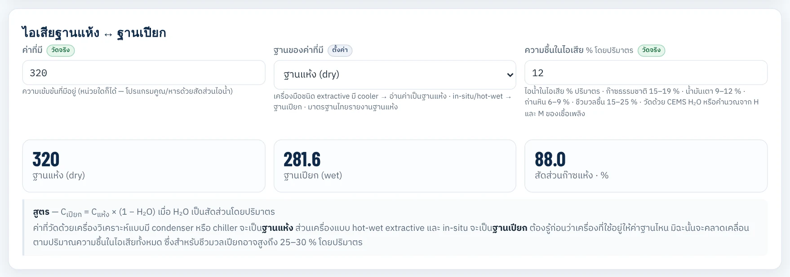
1
2
3
4
1
ค่าที่วัดได้
2
ฐานของค่าที่มี — แห้ง หรือ เปียก
3
ไอน้ำในไอเสีย (% โดยปริมาตร)
4
ผล: 320 ฐานแห้ง = 281.6 ฐานเปียก (ก๊าซแห้ง 88.0 %)
เครื่องวัดที่มีชุดดักน้ำ/ทำความเย็นก่อนวัด ให้ค่าฐานแห้ง · เครื่องที่วัดในปล่องโดยตรงให้ค่าฐานเปียก
ไอเสียจากชีวมวลชื้นมีไอน้ำสูง — ไม่แปลงฐาน ค่าคลาดเคลื่อนตามสัดส่วนไอน้ำ
ขั้นที่ 7
แท็บ 6: คลังเชื้อเพลิง GCV / NCV
คู่มือใช้งาน · แปลงหน่วยเชื้อเพลิงและไอเสีย (Fuel & Flue Gas Converter) · ระดับ Free
20 / 25
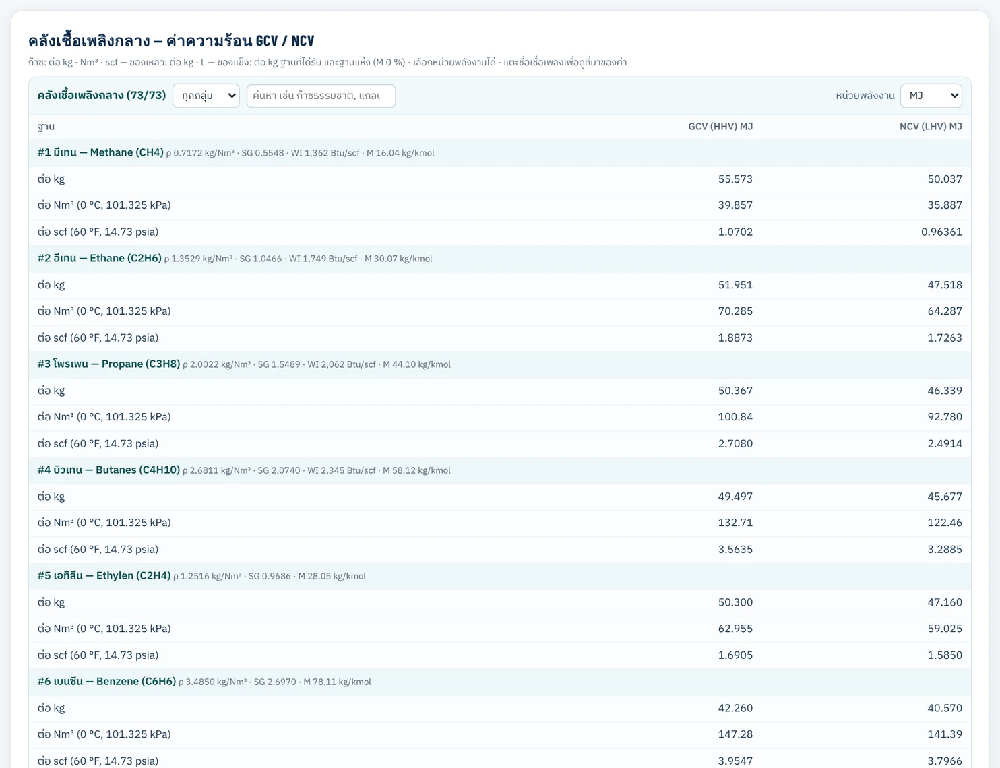
รายการเชื้อเพลิง 73 ชนิด: ก๊าซ · ของเหลว · ของแข็ง — กรองตามกลุ่มหรือพิมพ์ค้นหาได้
เลือกหน่วยพลังงานได้ (MJ · kcal · kWh · Btu · GJ · MMBtu)
แต่ละรายการให้ทั้ง GCV และ NCV — ก๊าซมีต่อ kg ต่อ Nm³ ต่อ scf · ของแข็งมีฐานที่ได้รับและฐานแห้ง
แตะชื่อเชื้อเพลิงเพื่อดูที่มาของค่า — ใช้อ้างอิงในรายงานได้
💡 เคล็ดลับ
ค่าจากคลังเป็นค่าทั่วไปของเชื้อเพลิงชนิดนั้น — มีผลแล็บของเชื้อเพลิงที่ใช้จริง ให้ใช้ผลแล็บก่อนเสมอ
บันทึกงาน และเปิดงานเดิม
คู่มือใช้งาน · แปลงหน่วยเชื้อเพลิงและไอเสีย (Fuel & Flue Gas Converter) · ระดับ Free
21 / 25
1
2
3
1
บันทึก JSON — เก็บค่าที่กรอกทุกแท็บเป็นไฟล์ 1 ไฟล์
2
โหลด JSON — เปิดไฟล์งานเดิมกลับมาทำต่อ
3
คืนค่าตั้งต้น — ล้างทุกช่องกลับเป็นตัวอย่าง (บันทึก JSON ก่อนกด)
ตั้งชื่อไฟล์ตามงาน เช่น โรงงานA_เทียบเชื้อเพลิง_2569-11-16.json
เครื่องมือไม่เก็บค่าไว้ให้เอง — ปิดหน้าเว็บโดยไม่บันทึก JSON ค่าที่กรอกจะหาย
พิมพ์ผลด้วยเมนูพิมพ์ของเบราว์เซอร์ (Ctrl+P) แล้วเลือกบันทึกเป็น PDF
ข้อผิดพลาดที่พบบ่อย
คู่มือใช้งาน · แปลงหน่วยเชื้อเพลิงและไอเสีย (Fuel & Flue Gas Converter) · ระดับ Free
22 / 25
✗ เทียบเชื้อเพลิงที่ราคาต่อตัน
✓ ต้องเทียบที่ บาท/GJ ใช้งานจริง — เชื้อเพลิงชื้นถูกต่อตันแต่แพงต่อความร้อน
✗ ผสมฐาน LHV กับ HHV
✓ ค่าความร้อนและประสิทธิภาพต้องฐานเดียวกัน
✗ ใช้ราคาไม่รวมขนส่ง
✓ ใช้ราคาถึงหน้าโรงงาน
✗ ใส่ไฮโดรเจนผิดฐาน
✓ ช่องไฮโดรเจน เถ้า และ O+N เป็น % ฐานแห้ง · ความชื้นเป็น % as-received
✗ ไม่แก้ค่ามลพิษที่ O₂ อ้างอิง
✓ ค่าที่เทียบมาตรฐานต้องเป็นค่าที่แก้แล้ว
✗ คิด NOx ด้วยมวลโมเลกุลของ NO
✓ ต้องคิดเป็น NO₂ (46.01) — ใช้ 30.01 ค่าต่ำไปราว 35 %
✗ ไม่รู้ว่าเครื่องวัดให้ฐานไหน
✓ ถามผู้ตรวจวัดว่าเป็นฐานแห้งหรือฐานเปียกก่อนใช้ค่า
✗ ใช้ค่าคลังแทนผลแล็บ
✓ มีผลแล็บของเชื้อเพลิงจริง ให้พิมพ์ทับค่าจากคลัง
แบบฝึกหัด: โรงงาน B ใช้ถ่านหินบิทูมินัส
คู่มือใช้งาน · แปลงหน่วยเชื้อเพลิงและไอเสีย (Fuel & Flue Gas Converter) · ระดับ Free
23 / 25
| ข้อมูล | ค่า |
|---|---|
| เชื้อเพลิง (เลือกจากรายการในแท็บ 1) | ถ่านหินบิทูมินัส |
| ราคา · ประสิทธิภาพหม้อไอน้ำ | 4,800 บาท/ตัน · 84 % |
| ปริมาณที่ใช้ (แท็บ 4) | 500 ตัน |
| NOx ที่วัดได้ · O₂ ที่วัดได้ · O₂ อ้างอิง (แท็บ 5) | 180 ppm · 9.0 % · 7 % |
| ค่าอื่นทั้งหมด | ใช้ค่าตั้งต้นของเครื่องมือ |
คำถาม — กรอกแล้วตอบ
1
ราคาต่อพลังงาน = ______ บาท/GJ · ใช้งานจริง ______ บาท/GJ
2
500 ตัน = ______ GJ = ______ toe
3
NOx ที่แก้ไป O₂ 7 % = ______ ppm
4
180 ppm NOx = ______ mg/Nm³
💡 เคล็ดลับ
กด "คืนค่าตั้งต้น" ก่อนเริ่ม → แท็บ 1 เลือกเชื้อเพลิงและกรอกราคา → แท็บ 4 → แท็บ 5
เฉลยแบบฝึกหัด โรงงาน B
คู่มือใช้งาน · แปลงหน่วยเชื้อเพลิงและไอเสีย (Fuel & Flue Gas Converter) · ระดับ Free
24 / 25
1) ค่าความร้อนจากคลัง 24.58 MJ/kg → 195.28 บาท/GJ · ใช้งานจริง 232.48 บาท/GJ
2) 500 ตัน = 12,290 GJ = 293.5416 toe · มูลค่า 2,400,000 บาท
3) NOx ที่แก้แล้ว = 180 × (21 − 7) ÷ (21 − 9.0) = 210 ppm (ตัวคูณ 1.1667)
4) 180 ppm × 46.01 ÷ 22.414 = 369.49 mg/Nm³
✓ ผ่าน
ได้ตัวเลขตรงกัน = ใช้เครื่องมือเป็นแล้ว · เทียบกับโรงงาน A: ถ่านหินแพงกว่า PKS ที่ความร้อนใช้งานจริง (232.48 กับ 202.29 บาท/GJ)
สรุป 1 หน้า (พิมพ์ติดไว้ข้างคอมพิวเตอร์)
คู่มือใช้งาน · แปลงหน่วยเชื้อเพลิงและไอเสีย (Fuel & Flue Gas Converter) · ระดับ Free
25 / 25
1
แท็บ 1: เชื้อเพลิง
เลือกชนิด · ค่าความร้อน (ผลแล็บถ้ามี)
2
แท็บ 1: ราคา
ราคาถึงหน้าโรงงาน · หน่วย · ประสิทธิภาพ
3
แถบสรุป
บาท/GJ ที่ซื้อ · บาท/GJ ใช้งานจริง
4
แท็บ 2: เทียบ
ใส่เชื้อเพลิงทางเลือก → อันดับถูกไปแพง
5
แท็บ 3: LHV ↔ HHV
ไฮโดรเจน · ความชื้น · เถ้า · O+N → ทั้ง 3 ฐาน
6
แท็บ 4: พลังงาน
ปริมาณ → GJ · kWh · toe
7
แท็บ 5: ไอเสีย
แก้ O₂ อ้างอิง · ppm ↔ mg/Nm³ · แห้ง ↔ เปียก
8
แท็บ 6: คลัง
ค้นค่า GCV / NCV และที่มา
อ่านผลแล้วตรวจ
☐
เทียบเชื้อเพลิง → ใช้บาท/GJ ใช้งานจริง
☐
ค่าความร้อนกับประสิทธิภาพ → ฐานเดียวกัน
☐
ค่ามลพิษ → แก้ที่ O₂ อ้างอิงก่อนเทียบ
☐
NOx → คิดเป็น NO₂
อ.หนึ่ง กลับทวี / Aj. Nueng Klubtavee
tripleeenergytools.com
tripleeenergytools.com